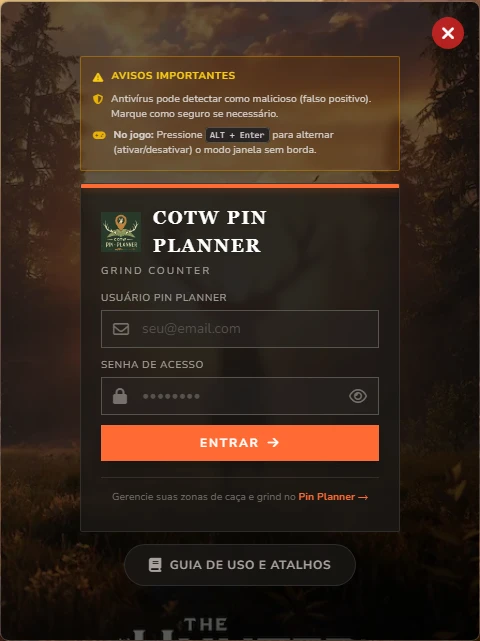
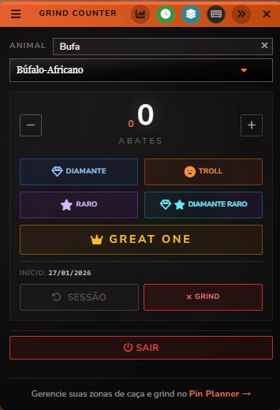

COTW GRIND
COUNTER OVERLAY
O contador de abates definitivo para theHunter: COTW.
Pare de usar celular ou papel. Mantenha
o foco no jogo.
Compatível com Windows 10/11
Em breve para Android e iOS
v1.0.0 | Grátis
CONTA
UNIFICADA
Se você já tem uma conta Pin Planner é só baixar e usar.
Se você não tem acesse COTW Pin
Planner e crie uma conta para usar o COTW Grind Counter Overlay.
RECURSOS
DO APP
Você NÃO PRECISA mais de celular ou papel.
Contador de Abates, funciona junto com o jogo, HUD compacto e estatísticas detalhadas de cada
caçada.
Tudo projetado para não interromper a imersão da sua caçada, do seu grind e ainda te auxiliar de
maneira discreta.
